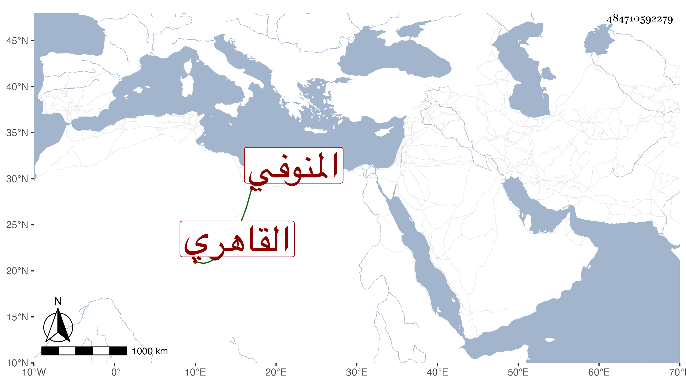

0902Sakhawi.DawLamic.ITO20230111-ara1.EIS1600.484710592279
Biography ID: 484710592279
14
علي بن محمد بن فخر الدين فخر بن ناصر الدين بن خالد بن صالح المنوفي ثم القاهري نزيل البيبرسية ويعرف بالشيخ علي المنوفي وقبل ذلك بابن فخر . شيخ مسن كان إقباعيا معروفا بالخير ثم أعرض عن التكسب وانقطع بالبيبرسية وتردد لإمام الكاملية فنوه به حتى صار أحد المعتقدين وقصد بالزيارة وغيرها ، وأظنه ممن سمع على شيخنا نعم سمع بقراءتي وعلي ونعم الرجل . مات في جمادى الأولى سنة تسعين ووجد له بعض نقد وتركة يجتمع منها مائة وخمسون دينارا .
